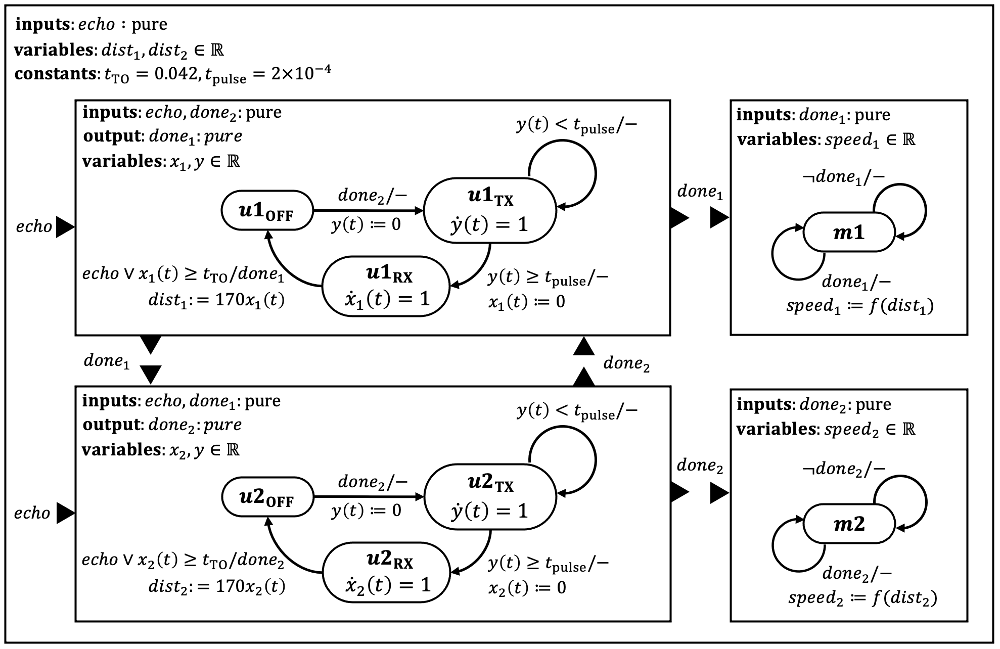
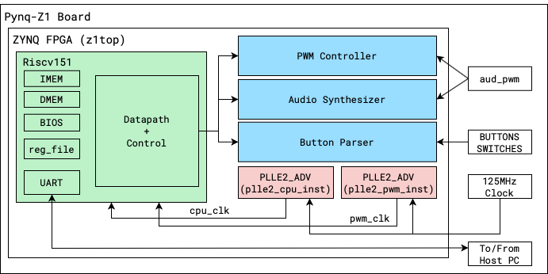
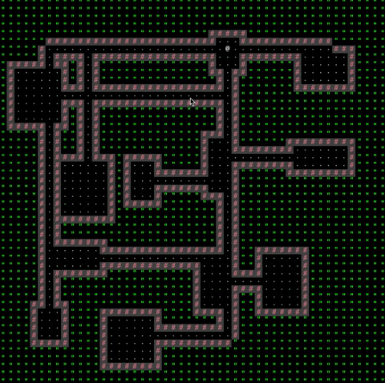

Lingua Franca on NRF

Lingua Franca (LF) is a coordination metalanguage, based on an actor model.
Code is written in a mix of LF syntax and the host language (in our case, C), compiled to the host language, and then run on the target architecture.
Before this project, the C runtime of LF was only supported on Linux, MacOS, and Windows, with no support for embedded platforms.
Our main challenge was to port and demonstrate usage of LF on the nRF52832 SoC.
Final Report: Linga Franca on NRF.
RISCV151

In a team of 2, I helped develop a 3-stage pipelined RISC-V CPU with a UART for tethering.
The CPU was designed using Verilog and made to run on the Xilinx Pynq Platform with a Zynq 7000-series FPGA.
The CPU also consisted of integrated I/O, a PWM Controller, and Subtractive Synthesizer.
This allowed for the implementation of a fully functional keyboard based piano.
Final Report: RISCV151.
BYOW

"Build Your Own World", an engine I developed using Java to generate 2D tile-based explorable worlds.
The worlds were pseudorandomly generated using a seed entered by the user.
I also implemented a feature to save movements the user has made as well as load and replay a previously saved game.